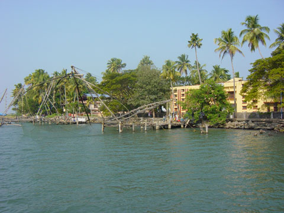
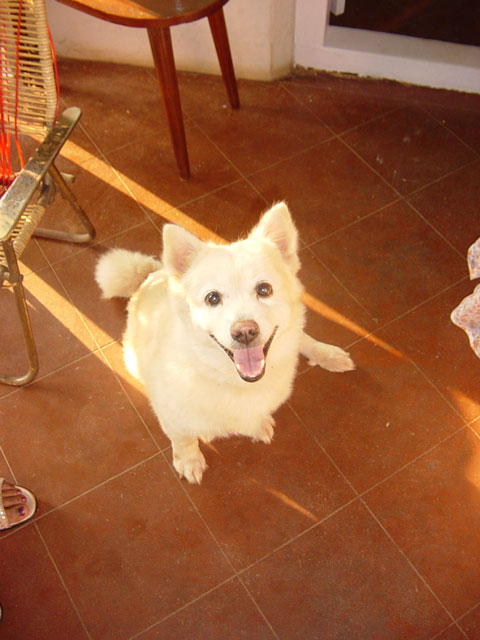

Driven from Cochin to Munnar staying at KTDC Tea County. (Started snacking on the banana chips Babitha bought for us. Very moorish). Saw another elephant being riden down road along the way.
Munnar is very mountainous & tropically lush!
Went for a stroll to the shops in Munnar. Had my photo taken by someone with their mobile phone camera. Took an auto-ricksaw to tourist information & booked a tour for tomorrow. Autoricksaw man waited for us & took us on a mini tour. He showed us a coffee tree & we picked some coffee pods. Also saw some Cardomon plants and tea plantations. Cost of autoricksaw was 100 + 20 tip.
Took a stroll around market & bought some bananas for 13.5 rupees. Bananas not that nice, peachy colour inside & quite tough. Perhaps these are meant for cooking.
Back at Tea County. Had a game of snooker before dinner.
Archive for the ‘India 2005 Holiday’ Category
Sunday 1st January 2006
Sunday, January 1st, 2006{kind=link}
Saturday 31st December 2005
Saturday, December 31st, 2005Went on a boat tour between 8:45-11:45. Expensive at 1200 rupees but had entire double decker tourist boat to ourselves. Saw chinese fishing nets. Saw some dolphins. Set foot on Mattanchary island & went to Dutch Palace. Bought presents for parents-elephant coat rack & coasters.
Had lunch at Taj Residency
Visited Raman & Shanta
New year party at the flat

{kind=link}
Friday 30th December 2005
Friday, December 30th, 2005Driven back from Badagar to Cochin. Left 8:00am. Arrived Palat & Rugmini’s penthouse 9:00am. Left approx 9:30am and got back 2:30pm.
Had some toast & cake for lunch & hung out at flat until about 6:30pm went for walk with Yamini & bought some Lay magic masala crisps for 10 rupees. Left for dinner/buffett at Meridian hotel at about 7:30pm.
Thursday 29th December 2005
Thursday, December 29th, 2005Hung out in Badagar for the day.
Had a look around Uncle Gokri’s nursery.
Drank coconut milk which was sweeter so tasted nicer but stank. This one had been left to ferment slightly.
Went to postoffice. Told that postcards need to go in an envelope by postal worker who had never seen a postcard before.
Uncle Mohan dropped by to see us.
Visited next door to Mr Vidyer & across the road to Aunty Jayanthi’s mums house.
Pondered that never been anywhere that everyone stares so much. Cute Indian child said hi though.
Had hard sesame seed ball thingy for tea. Same as sesame snap?
Went for walk with Yamini in evening.
Heard the legendary polecat that lives in the attic.
Wednesday 28th December 2005
Wednesday, December 28th, 2005Driven to Varavoor (approx 1.5 hrs) to Yamini’s Granny’s house where Yamini’s dad grew up. Met Yamini’s cousin Kunykutten, and her Dad’s brother, and his wife, as well as Yamini’s Granny.
Had lunch, ate rice & sambar with hands off a banana leaf. Payasam (rice pudding) for dessert.
Saw vanilla plant, peppercorn & mango tree.
Drank coconut milk which smells & wasnt particularly pleasant to taste.
Then driven to Badagara (approx 4 hrs) to house where Yamini’s Mum grew up.
Uncle Gokri & Aunty Jayanthi now live here. Yamini’s cousin Babitha visited with her husband Manoj.
Saw lizards crawling up the wall.
Doogie the dog is a Pommerainium. Doogie didnt like the choc drops we bought but pretended to eat them & spat them out later.

{kind=link}
Tuesday 27th December
Tuesday, December 27th, 2005Commissioned a suit to be made at a cost of 9500 rupees. Approx �120. Also bought a short sleeved shirt for 550 rupees (�8).
Noted the head rocking thing!
Saw an elephant being taken for a walk.
Had paper masala dosa for lunch…a large thin pastry folded over with a potatoey filling.
Had prawn curry for dinner.
Monday 26th December 2005
Monday, December 26th, 2005Flight from Chennai to Cochin was at 6:30am. At Chennai airport bought coffee for 18 rupees and Lay spicy masala crisps. for 20 rupees. Flight was with Jet Airways, very good service! Plenty of legroom, 2 seats either side of aisle and quality breakfast.
Arrived Cochin 7:30am. Landing in cochin it feels like your going to land in the middle of the jungle. Airport is very nice and of a traditional style.
Sunday 25th December 2005
Sunday, December 25th, 2005Had �15 each breakfast in Sheraton Skyline. (Yamini had forgotten breakfast was not included in the price). Got taxi from hotel to terminal 4.
We both watched “Sky high” and had turkey dinner.
Landed around 12:50am. It was 2:30am by the time we had got luggage and were sitting in the domestic terminal in Chennai. Even at this time in the morning it was quite humid.
Saturday 24th December 2005
Saturday, December 24th, 2005Left the magnificent Stalker at the cattery at about 10am.
Set off around 12:30pm and stopped at Ask restaurant at London Victoria for lunch.
Continued by tube to Heathrow, Sheraton Skyline.
Booked �20 taxi for morning. Went to ‘Sage’ bar for dinner snack.
{kind=link}